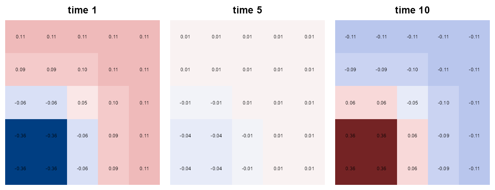
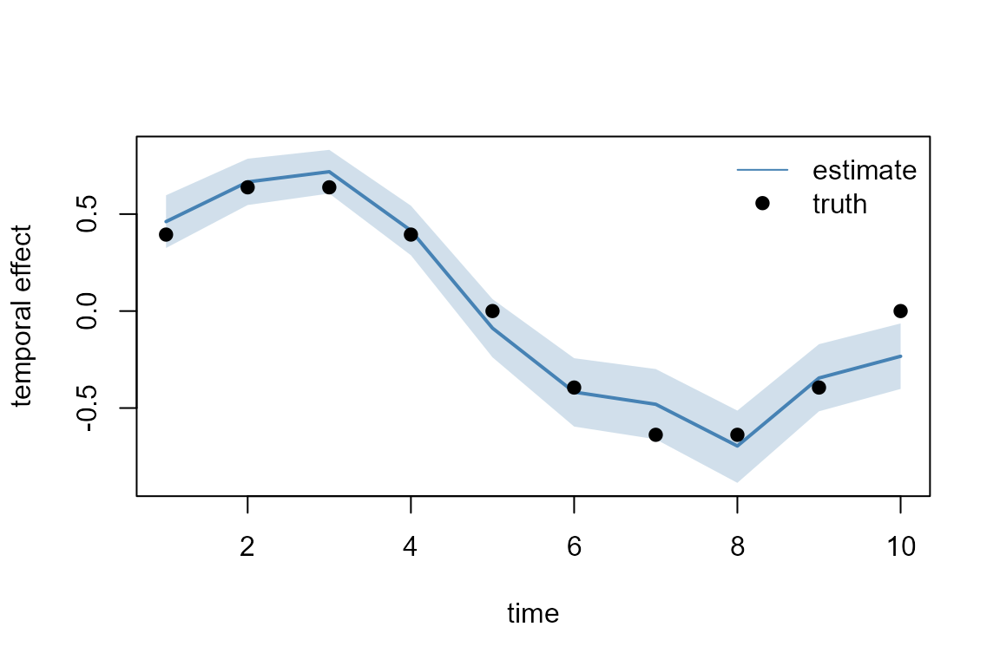
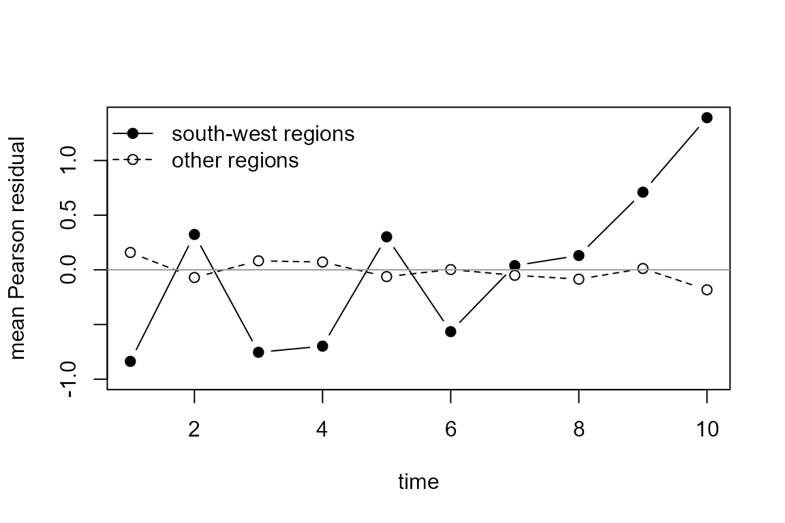
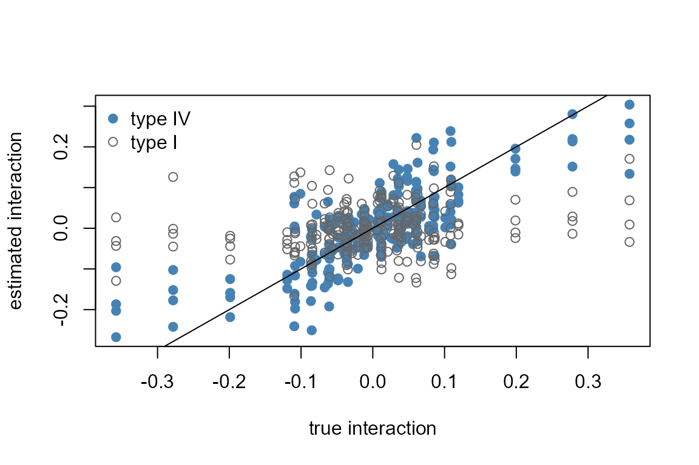
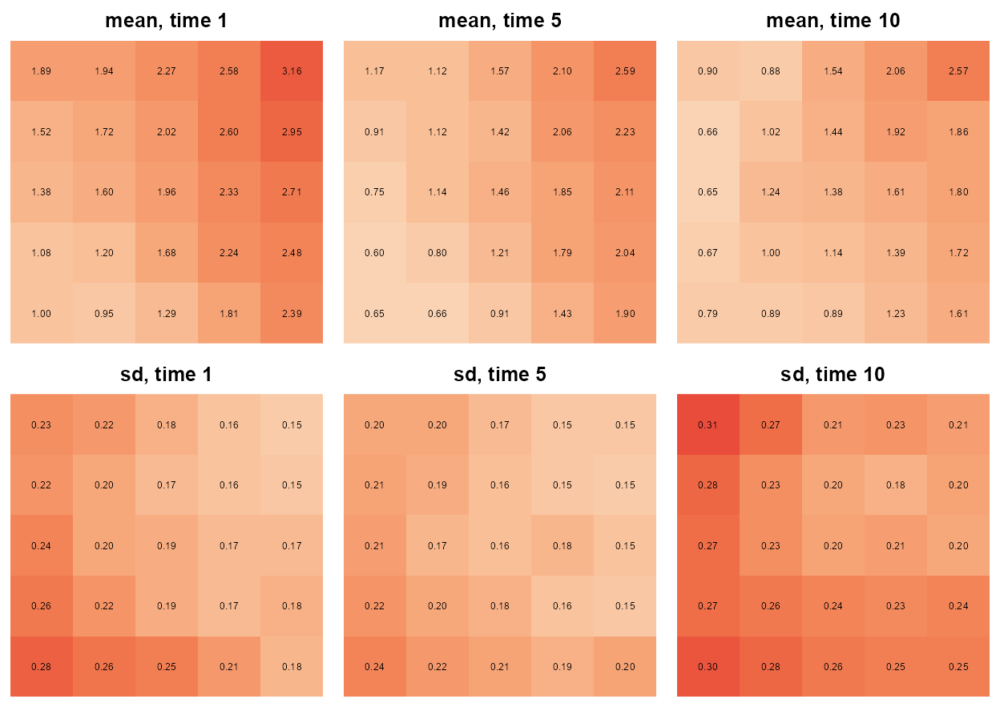
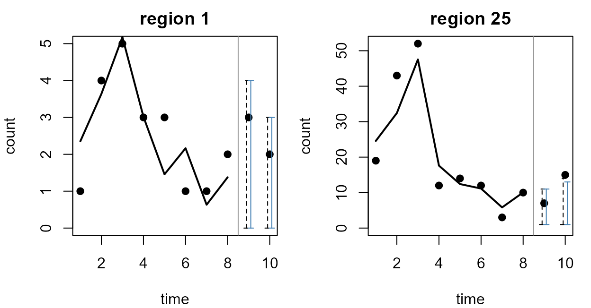

Counts recorded per region and per year carry two kinds of structure
at once. Neighbouring regions look alike, consecutive years look alike,
and sometimes the map itself changes over time: an outbreak that starts
in one corner and spreads, a decline that hits the north first. This
article fits such data with tulpa from the simplest model, a spatial
field plus a time trend, up to the four interaction types of Knorr-Held
(2000). It ends with maps per time slice, a forecast for two held-out
years, a comparison of the models, and a table of which door fits which
model. It builds on Spatial models and
Temporal models; the
prior-sensitivity section builds one interaction block with the
tgmrf() construction from Custom
latent blocks.
Installation is covered in Get started. That custom block is a sparse precision matrix built with Matrix.
The model
Consider regions observed at time points. Index the regions by and the time points by , and let denote the count recorded in region at time , with a covariate value . The counts are Poisson with log mean
where is the spatial effect of region , the temporal effect of time , and the space-time interaction: the part of the log mean that belongs to the pair and to neither main effect alone. Without the model is additive, and the map has the same shape at every time point, shifted up or down by .
The spatial effect is an intrinsic conditional autoregressive (ICAR) field on the adjacency graph of the regions. With the 0/1 adjacency matrix and the diagonal matrix of neighbour counts, its precision is with . The temporal effect is a first-order random walk with precision , where is the ICAR structure of a chain: for the first-difference matrix . Both structure matrices leave the constant vector unpenalised, and tulpa removes that direction with a sum-to-zero constraint, so the intercept carries the overall level.
The interaction is a vector of values. Stack them region-fastest, so that entry of is . Each Knorr-Held type gives a Gaussian prior with precision , where is a Kronecker product ( denotes the Kronecker product, and the identity):
| Type | What it says about | |
|---|---|---|
| I | every cell independent | |
| II | a random walk in time in each region, regions independent | |
| III | an ICAR map at each time, time points independent | |
| IV | smooth in space and in time |
The Kronecker form is what keeps the precision sparse. Entry of is , so it is nonzero only when and are equal or consecutive and and are equal or adjacent. A type IV cell is tied to its neighbours in space, in time, and across both at once.
Types II, III and IV are intrinsic. The null space of holds every that is constant in time within each region, which is exactly what already describes. The null space of holds every constant across regions at each time, which is what describes, and the null space of holds both. The interaction is identified by removing those directions with linear constraints :
- types II and IV: for every region ;
- types III and IV: for every time .
The rows of
span the null space of
.
tulpa imposes
as a hard constraint: the inner Newton step solves on the constraint
set, and the Laplace approximation integrates over the
directions left. The density is normalised by the generalized
determinant of
,
which depends on
through
.
spatiotemporal(type = ) builds
and
from the adjacency and the walk of the fit’s own spatial and temporal
specs.
Simulating data
Put regions on a 5 by 5 lattice, each adjacent to the regions sharing an edge with it, and observe them at time points.
nr <- 5; nc <- 5; S <- nr * nc; Tn <- 10
xy <- expand.grid(col = 1:nc, row = 1:nr)
W <- 1 * (as.matrix(dist(xy, method = "manhattan")) == 1)The spatial truth u_true is a gradient rising from the
south-west to the north-east corner, the temporal truth
v_true one sine wave over the ten time points. The
interaction is a hotspot in the south-west corner that grows linearly
over time, centred over regions and over time points so that it
satisfies both sets of constraints and carries nothing the main effects
could take. On the log scale the three components have standard
deviations of about 0.6, 0.5 and 0.1.
u_true <- 0.6 * as.numeric(scale(xy$col + 0.5 * xy$row))
v_true <- 0.5 * as.numeric(scale(sin(2 * pi * (1:Tn) / Tn)))
g <- exp(-((xy$col - 1.5)^2 + (xy$row - 1.5)^2) / 2)
bump <- 1.2 * outer(g, (1:Tn - 1) / (Tn - 1))
delta_true <- bump - outer(rowMeans(bump), rep(1, Tn)) -
outer(rep(1, S), colMeans(bump)) + mean(bump)
round(c(range = range(delta_true), sd = sd(c(delta_true))), 3)
#> range1 range2 sd
#> -0.358 0.358 0.107Each region-time cell gets one count with intercept 1.5 (a mean count
of about 4.5) and slope 0.4 on a covariate drawn per cell. The data
frame is ordered region-fastest, so row cell is entry
cell of the stacked interaction.
set.seed(11)
d <- expand.grid(region = 1:S, time = 1:Tn)
d$cell <- seq_len(nrow(d))
d$x <- rnorm(nrow(d))
eta <- 1.5 + 0.4 * d$x + u_true[d$region] + v_true[d$time] +
delta_true[cbind(d$region, d$time)]
d$y <- rpois(nrow(d), exp(eta))
head(d, 3)
#> region time cell x y
#> 1 1 1 1 -0.59103110 1
#> 2 2 1 2 0.02659437 2
#> 3 3 1 3 -1.51655310 2show_map() draws one value per region on the lattice,
south-west corner at the bottom left, with the value printed in each
cell. The true interaction at three time points shows the hotspot:
negative at time 1, positive by time 10, with the opposite sign in the
far corner that the centring puts there.
show_map <- function(z, main, zlim, pal = hcl.colors(30, "Blue-Red 3")) {
image(1:nc, 1:nr, matrix(z, nc, nr), zlim = zlim, main = main, col = pal,
xlab = "", ylab = "", axes = FALSE)
text(xy$col, xy$row, sprintf("%.2f", z), cex = 0.6)
}
op <- par(mfrow = c(1, 3), mar = c(0.5, 0.5, 2, 0.5))
for (tt in c(1, 5, 10)) show_map(delta_true[, tt], paste("time", tt), c(-0.4, 0.4))
par(op)Fitting the additive model
The additive model needs no new syntax. The spatial field goes in as
in Spatial models, through
spatial = and a spatial(region) term, and the
trend as in Temporal models, through
temporal =. ctl keeps the fits to two threads
and switches off the progress lines.
ctl <- list(n_threads = 2, progress = FALSE)
fit_add <- tulpa(y ~ x + spatial(region), data = d, family = "poisson",
spatial = list(type = "icar", adjacency = W),
temporal = temporal_rw1("time"), mode = "auto",
control = ctl)
summary(fit_add)
#> tulpa fit (nested_laplace, tier 2)
#> Call: tulpa(formula = y ~ x + spatial(region), data = d, family = "poisson", mode = "auto", spatial = list(type = "icar", adjacency = W), temporal = temporal_rw1("time"), control = ctl)
#> inference mode: structured
#> selected because: icar spatial field + temporal rw1 field; joint nested-Laplace integration
#> family: poisson
#> n_obs: 250
#>
#> Fixed effects:
#> estimate std.error 2.5 % 97.5 %
#> (Intercept) 1.5071 0.03299 1.440 1.5691
#> x 0.3792 0.02889 0.323 0.4362
#> interval read: skew_map_cell
#> interval declined: skew_correct: gamma_3 is retained at the MAP cell only, so the mixture components carry no per-cell skew to compose; the coefficients it declines keep the read they would have had
#>
#> Hyperparameters:
#> parameter mean sd median ci_lo ci_hi
#> b1.tau 5.015 1.614 4.814 2.437 8.703
#> b2.tau 11.042 5.848 9.936 3.028 25.431
#>
#> Fixed-effect prior: normal(0, 2.5)
#>
#> Reliability (iid draws):
#> grid ESS 13.11 of 121 cells; inner skew 0.00569 (good)
#> verdict: outer integration not assessed; inner Laplace goodmode = "auto" routed the pair to the joint
nested-Laplace backend, which integrates over a grid of the two
precisions, b1.tau for the spatial block and
b2.tau for the temporal one. The slope interval brackets
the true 0.4. The intercept has a standard error of 0.033.
The two fields are read back with their own accessors.
field_effects() returns the spatial field per region with
its posterior standard deviation and 95% interval, read from the grid
mixture (source = "mixture"). temporal()
returns the trend with its posterior spread, from 2000 draws of the grid
mixture.
fe <- field_effects(fit_add)
head(fe, 3)
#> unit label estimate sd conf.low conf.high source
#> 1 1 1 -0.7923658 0.1660111 -1.1182721 -0.467049 mixture
#> 2 2 2 -0.7674850 0.1575726 -1.0792778 -0.460814 mixture
#> 3 3 3 -0.5412497 0.1525171 -0.8437453 -0.245193 mixture
tp <- as.data.frame(temporal(fit_add, summary = TRUE))
round(c(cor_u = cor(fe$estimate, u_true), cor_v = cor(tp$mean, v_true)), 3)
#> cor_u cor_v
#> 0.979 0.978
sum(v_true >= tp$q2.5 & v_true <= tp$q97.5)
#> [1] 9Plotted against the truth, the trend follows the sine wave and its 95% band covers 9 of the 10 simulated values.
plot(1:Tn, tp$mean, type = "n", ylim = range(tp$q2.5, tp$q97.5, v_true),
xlab = "time", ylab = "temporal effect")
polygon(c(1:Tn, Tn:1), c(tp$q2.5, rev(tp$q97.5)),
col = adjustcolor("steelblue", 0.25), border = NA)
lines(1:Tn, tp$mean, lwd = 2, col = "steelblue")
points(1:Tn, v_true - mean(v_true), pch = 19)
legend("topright", c("estimate", "truth"), lty = c(1, NA), pch = c(NA, 19),
col = c("steelblue", "black"), bty = "n")
The direct fitter and an AR(1) trend
fit_st_nested() fits the same additive model from a
response vector, a design matrix and integer indices, without a formula.
Its default temporal field is an AR(1) process; with
temporal_type = "rw1" it is the model above.
fit_st <- fit_st_nested(d$y, cbind(1, d$x), d$region, W, d$time, Tn,
temporal_type = "rw1", family = "poisson",
control = list(n_threads = 2))
rbind(tulpa = coef(fit_add), fit_st_nested = coef(fit_st))
#> (Intercept) x
#> tulpa 1.507087 0.3792109
#> fit_st_nested 1.507183 0.3791990
c(tulpa = logLik(fit_add), fit_st_nested = logLik(fit_st))
#> tulpa fit_st_nested
#> -594.6981 -594.7043The two doors agree on the coefficients to the fourth decimal and on
the log evidence to 0.05. The AR(1) variant replaces the random walk by
a stationary process whose correlation rho is integrated on
its own grid axis.
fit_ar1 <- fit_st_nested(d$y, cbind(1, d$x), d$region, W, d$time, Tn,
temporal_type = "ar1", family = "poisson",
control = list(n_threads = 2))
summary(fit_ar1)$hyperparameters[, c("parameter", "mean", "sd")]
#> parameter mean sd
#> 1 tau_spatial 5.0298950 1.3176212
#> 2 tau_temporal 10.9667305 4.0207765
#> 3 rho 0.8121222 0.1655499
c(rw1 = logLik(fit_st), ar1 = logLik(fit_ar1))
#> rw1 ar1
#> -594.7043 -596.2453The AR(1) fit puts the correlation’s posterior mean at 0.81 and its
log evidence 1.5 below the random walk’s. fit_st_nested()
also takes spatial_type = "bym2",
"car_proper", "hsgp" and "nngp";
the same pairs reach tulpa() through
spatial = list(type = "bym2", ...) or
spatial_gp().
A continuous field with a trend
When the regions are points with coordinates, the spatial block can be a nearest-neighbour Gaussian process (NNGP) on the coordinates instead of an ICAR field on the adjacency. Here the lattice positions serve as coordinates.
d$lon <- xy$col[d$region]; d$lat <- xy$row[d$region]
fit_gp <- tulpa(y ~ x, data = d, family = "poisson",
spatial = spatial_gp(~ lon + lat),
temporal = temporal_rw1("time"), mode = "auto", control = ctl)
#> GP: 25 unique locations from 250 observations
summary(fit_gp)$hyperparameters[, c("parameter", "mean", "ci_lo", "ci_hi")]
#> parameter mean ci_lo ci_hi
#> 1 b1.sigma2 0.4514785 0.1497793 1.278785
#> 2 b1.phi_gp Inf 2.5944811 31.592851
#> 3 b2.tau 11.0962746 3.0739057 25.308792The grid now runs over the field variance b1.sigma2, its
range b1.phi_gp and the trend precision
b2.tau. With 25 locations the variance interval runs from
0.16 to 4.53.
Checking the additive fit
The additive model claims that every map is the same map shifted. A
residual check for that claim needs the in-sample linear predictor with
both fields in it. predict() holds an areal or temporal
field at zero, so the predictor is read from the grid instead: a nested
fit stores, for every grid cell
and observation
,
the inner Laplace mean fitted_eta[k, i] and variance
fitted_eta_var[k, i] of
.
Mixing them with the grid weights
gives the posterior mean and standard deviation of each
.
eta_posterior <- function(fit) {
k <- which(fit$weights > 0)
w <- fit$weights[k] / sum(fit$weights[k])
E <- fit$fitted_eta[k, , drop = FALSE]
V <- fit$fitted_eta_var[k, , drop = FALSE]
m <- colSums(w * E)
data.frame(mean = m, sd = sqrt(colSums(w * (V + E^2)) - m^2))
}
ep_add <- eta_posterior(fit_add)
r_add <- (d$y - exp(ep_add$mean)) / sqrt(exp(ep_add$mean))r_add holds the Pearson residual of each region-time
cell. A hotspot that the additive model misses shows up as residuals
that drift in the same direction over time in neighbouring regions. The
plot averages the residuals over the five regions closest to the
south-west corner and over the other twenty.
sw <- g > 0.3
r_mat <- matrix(r_add, S, Tn)
plot(1:Tn, colMeans(r_mat[sw, ]), type = "b", pch = 19,
ylim = range(colMeans(r_mat[sw, ]), -1, 1),
xlab = "time", ylab = "mean Pearson residual")
lines(1:Tn, colMeans(r_mat[!sw, ]), type = "b", pch = 1, lty = 2)
abline(h = 0, col = "grey60")
legend("topleft", c("south-west regions", "other regions"),
pch = c(19, 1), lty = c(1, 2), bty = "n")
The other regions stay within 0.2 of zero at every time point. The five south-west regions swing between about -0.8 and +0.3 over the first six time points and then climb, past +0.7 at time 9. A formal version of the same check: fit a residual slope over time in each region, then test whether neighbouring regions have similar slopes with Moran’s I on the lattice coordinates.
slope <- apply(r_mat, 1, function(r) coef(lm(r ~ seq_len(Tn)))[2])
moran_i(slope, as.matrix(xy), weights = "knn", k = 4)
#>
#> Moran's I (k=4 nearest neighbours)
#>
#> data: slope
#> Moran's I = 0.21049, Expected I = -0.041667, p-value = 0.03726
#> alternative hypothesis: two.sidedMoran’s I of the residual slopes is 0.21, against an expected value of -0.04 without spatial structure (p = 0.037), so neighbouring regions share their residual trends. A dispersion test on the replicates the fit simulates checks the count distribution as a whole.
test_dispersion(fit_add, nsim = 100)
#>
#> Simulation-based dispersion test
#>
#> data: fit_add
#> dispersion ratio = 1.0909, p-value = 0.44
#> alternative hypothesis: two.sidedThe dispersion ratio is 1.07 (p = 0.48). The counts show no excess spread overall, and the interaction is found only by the check that follows regions over time.
Fitting the interactions
Type I: an independent effect per cell
A type I interaction is one random intercept per region-time cell, so
it goes into the formula as (1 | cell). On the
nested-Laplace path its standard deviation is integrated on a third grid
axis, b3.sigma.
dI <- transform(d, cell = factor(cell))
fit_I <- tulpa(y ~ x + spatial(region) + (1 | cell), data = dI,
family = "poisson",
spatial = list(type = "icar", adjacency = W),
temporal = temporal_rw1("time"), mode = "auto", control = ctl)
summary(fit_I)$hyperparameters[, c("parameter", "mean", "ci_lo", "ci_hi")]
#> parameter mean ci_lo ci_hi
#> 1 b1.tau 5.0175724 2.43274466 8.7250870
#> 2 b2.tau 11.6020633 3.18997099 26.7518898
#> 3 b3.sigma 0.1660362 0.04583251 0.2656239tulpa warns when a multi-block grid takes more than 2 s to solve;
this fit and the interaction fits below sit near that limit on the
machine that built the article, and their warnings are not printed. The
posterior of
sits at 0.17 with an interval from 0.08 to 0.26, against an interaction
whose true standard deviation is 0.107. ranef() returns the
250 cell effects with their posterior standard deviations and 95%
intervals.
Types II, III and IV: spatiotemporal()
The structured types go into tulpa() through
spatiotemporal =. spatiotemporal(type = )
takes the graph from the fit’s spatial = spec and the walk
from its temporal = spec, builds the Kronecker structure
and the constraints of the model section, and adds the interaction as a
third block whose precision
is integrated on its own grid axis, b3.tau.
fit_int() adds an interaction of the given type to the
additive model.
fit_int <- function(type, data = d) {
tulpa(y ~ x + spatial(region), data = data, family = "poisson",
spatial = list(type = "icar", adjacency = W),
temporal = temporal_rw1("time"),
spatiotemporal = spatiotemporal(type = type),
mode = "auto", control = ctl)
}
fit_II <- fit_int("II")
fit_III <- fit_int("III")
fit_IV <- fit_int("IV")
summary(fit_IV)$hyperparameters[, c("parameter", "mean", "ci_lo", "ci_hi")]
#> parameter mean ci_lo ci_hi
#> 1 b1.tau 5.212854 2.531785 9.060296
#> 2 b2.tau 12.297476 3.387975 28.175678
#> 3 b3.tau 57.373271 13.118868 232.224116Extracting the interaction
spatiotemporal_effects() reads the interaction back per
region and time: with format = "summary" it returns one row
per cell, region fastest, with the posterior mean, quantiles and
standard deviation from draws of the grid mixture. dc()
removes region and time means, which the type I estimate needs before it
can be compared with a centred truth; the constrained types satisfy it
already.
st_IV <- spatiotemporal_effects(fit_IV, format = "summary")
head(st_IV, 3)
#> Spatiotemporal interaction posterior summary: 25 locations x 10 times
#> s t mean q2.5 q50 q97.5 sd
#> 1 1 1 -0.2029502 -0.6395368 -0.1925903 0.18648129 0.2080403
#> 2 2 1 -0.2676218 -0.6754598 -0.2531105 0.05987416 0.1887823
#> 3 3 1 -0.1363836 -0.4975363 -0.1273022 0.18525321 0.1710570
delta_hat <- function(fit) {
matrix(spatiotemporal_effects(fit, format = "summary")$mean, S, Tn)
}
dc <- function(M) M - outer(rowMeans(M), rep(1, Tn)) -
outer(rep(1, S), colMeans(M)) + mean(M)
est <- list(I = dc(matrix(re_I$estimate, S, Tn)), II = delta_hat(fit_II),
III = delta_hat(fit_III), IV = delta_hat(fit_IV))
sapply(est, function(M) round(c(cor = cor(c(M), c(delta_true)),
rmse = sqrt(mean((M - delta_true)^2))), 3))
#> I II III IV
#> cor 0.196 0.540 0.447 0.776
#> rmse 0.111 0.091 0.099 0.069Type IV recovers the hotspot best, with a correlation of 0.78 against the truth, followed by types II and III. Type I, which shares no information between cells, reaches 0.20. In the scatter the type IV estimates follow the identity line and are shrunk toward zero at the largest true values, while the type I estimates spread over the whole vertical range at every true value.
plot(c(delta_true), c(est$IV), pch = 19, col = "steelblue",
ylim = range(est$IV, est$I), xlab = "true interaction",
ylab = "estimated interaction")
points(c(delta_true), c(est$I), pch = 1, col = "grey40")
abline(0, 1)
legend("topleft", c("type IV", "type I"), pch = c(19, 1),
col = c("steelblue", "grey40"), bty = "n")
Maps per time slice
The quantity mapped is the space-time part of the log mean, , read from the type IV fit as the posterior mean of minus the covariate term at the posterior-mean slope. The bottom row maps the posterior standard deviation of .
ep_IV <- eta_posterior(fit_IV)
st_mean <- matrix(ep_IV$mean - coef(fit_IV)[["x"]] * d$x, S, Tn)
st_sd <- matrix(ep_IV$sd, S, Tn)
seq_pal <- hcl.colors(30, "Peach", rev = TRUE)
op <- par(mfrow = c(2, 3), mar = c(0.5, 0.5, 2, 0.5))
for (tt in c(1, 5, 10)) show_map(st_mean[, tt], paste("mean, time", tt),
range(st_mean), seq_pal)
for (tt in c(1, 5, 10)) show_map(st_sd[, tt], paste("sd, time", tt),
range(st_sd), seq_pal)
The means carry the south-west to north-east gradient at every time point and the change of level with the trend. The standard deviations range from 0.11 to 0.31; they are largest where the mean is lowest, since a cell with a small expected count carries less information about its log mean.
Forecasting two years ahead
A random walk extends past the data. Given
,
the effect
steps ahead is
with
,
and a type II interaction adds its own walk in each region. In
tulpa() a forecast is a row whose response is
NA: the row is left out of the likelihood, its time is
still a node of the walk and of the interaction, and its covariate value
enters its linear predictor as usual.
To check the forecast against data, set the counts at times 9 and 10
to NA and fit the additive and the type II models to what
is left.
held <- d$time > 8
d_na <- d
d_na$y[held] <- NA
fp_add <- tulpa(y ~ x + spatial(region), data = d_na, family = "poisson",
spatial = list(type = "icar", adjacency = W),
temporal = temporal_rw1("time"), mode = "auto", control = ctl)
fp_II <- fit_int("II", data = d_na)posterior_predict() draws a count for every row, the
masked ones included. forecast_st() takes 2000 draws and
returns a 90% predictive interval per region and held-out time.
forecast_st <- function(fit, n = 2000) {
yrep <- posterior_predict(fit, ndraws = n, seed = 3)[, held]
data.frame(region = d$region[held], time = d$time[held], y = d$y[held],
lo = apply(yrep, 2, quantile, 0.05),
hi = apply(yrep, 2, quantile, 0.95))
}
fc <- list(additive = forecast_st(fp_add), type_II = forecast_st(fp_II))
t(sapply(fc, function(f) c(covered = sum(f$y >= f$lo & f$y <= f$hi),
of = nrow(f), mean_width = mean(f$hi - f$lo))))
#> covered of mean_width
#> additive 42 50 6.801
#> type_II 42 50 6.841The additive model covers 41 and the type II model 42 of the 50 held-out counts with their 90% intervals, and the two sets of intervals have the same mean width to within 0.1 counts. The plot shows the south-west corner region, where the hotspot grows, and the opposite corner.
ep_past <- eta_posterior(fp_II)
op <- par(mfrow = c(1, 2), mar = c(4, 4, 2, 1))
for (s in c(1, 25)) {
ys <- d$y[d$region == s]
f_a <- fc$additive[fc$additive$region == s, ]
f_2 <- fc$type_II[fc$type_II$region == s, ]
plot(1:Tn, ys, pch = 19, ylim = c(0, max(ys, f_2$hi, f_a$hi)),
xlab = "time", ylab = "count", main = paste("region", s))
lines(1:8, exp(ep_past$mean[d$region == s & !held]), lwd = 2)
arrows(9:10 - 0.1, f_a$lo, 9:10 - 0.1, f_a$hi, angle = 90, code = 3,
length = 0.03, lty = 2)
arrows(9:10 + 0.1, f_2$lo, 9:10 + 0.1, f_2$hi, angle = 90, code = 3,
length = 0.03, col = "steelblue")
abline(v = 8.5, col = "grey60")
}
par(op)The dashed bars are the additive forecast, the blue bars the type II forecast.
Comparing additive and interaction fits
WAIC reads the pointwise log-likelihood off each fit’s linear predictor with every field in it, so all five fits can be ranked on it.
compare_models(additive = fit_add, type_I = fit_I, type_II = fit_II,
type_III = fit_III, type_IV = fit_IV, criterion = "waic")
#> model elpd se_elpd p_eff ic delta se_diff weight
#> 2 type_I -564.8002 13.07985 51.35427 1129.600 0.0000000 NA 0.579128073
#> 4 type_III -565.5273 13.21187 49.65201 1131.055 -0.7270654 1.739896 0.279907224
#> 5 type_IV -566.3235 13.55630 47.43733 1132.647 -1.5232962 3.600274 0.126245376
#> 3 type_II -568.5760 13.84581 49.29449 1137.152 -3.7757999 2.695184 0.013272892
#> 1 additive -570.7926 15.18072 32.56719 1141.585 -5.9924213 2.943358 0.001446436Every interaction model ranks above the additive one, which sits 6.9
units of expected log predictive density (elpd) below the
best, at a standard error of the difference of 3.4. Among the
interaction types the differences reach 4.1 units, each within about 1.2
standard errors. The ranking puts type III first and type I 0.15 behind
it, even though type IV recovered the interaction best: WAIC scores the
fit to these 250 counts, and a free effect per cell can fit them as well
as a smooth one.
The log evidence is defined for every fit here, since the grid axes of all five carry a proper hyperprior.
compare_models(additive = fit_add, type_I = fit_I, type_II = fit_II,
type_III = fit_III, type_IV = fit_IV, criterion = "loglik")
#> model n_params logLik quantity conditioned_on
#> 1 additive 2 -594.6981 log_evidence
#> 2 type_I 2 -593.6972 log_evidence
#> 3 type_II 2 -594.1770 log_evidence
#> 4 type_III 2 -593.4823 log_evidence
#> 5 type_IV 2 -592.6215 log_evidenceThe type IV fit has the highest log evidence, 2.0 above the additive model, and the five fits lie within those 2.0 units of each other.
Prior sensitivity
The prior on
sets how much interaction the model expects before seeing the data.
spatiotemporal() places the engine’s default hyperprior on
it. A prior of your own takes the same type IV interaction built as a
tgmrf() block, which carries its prior as a function of
and enters the formula through latent().
st_block() takes the structure matrix K and
the constraint matrix B and returns a block whose precision
is
:
the constraints enter as a stiff penalty on the null space of
K, with a normal prior on
and grid bounds.
R_s <- Matrix(diag(rowSums(W)) - W, sparse = TRUE)
R_t <- Matrix(crossprod(diff(diag(Tn))), sparse = TRUE)
B_IV <- rbind(kronecker(matrix(1, 1, Tn), diag(S)),
kronecker(diag(Tn), matrix(1, 1, S)))
st_block <- function(K, B, name, mean = 3, sd = 1.5, lower = 0, upper = 7) {
C <- 1e3 * Matrix(crossprod(B), sparse = TRUE)
tgmrf(
Q = function(theta) as(as(exp(theta[1]) * K + C, "generalMatrix"),
"CsparseMatrix"),
prior = function(theta) dnorm(theta[1], mean, sd, log = TRUE),
init = c(log_tau = mean), bounds = list(lower = lower, upper = upper),
obs_idx = d$cell, name = name)
}One block puts on . The second centres it at 6 with standard deviation 0.25, a prior that expects an interaction with roughly a twentieth of the first one’s variance.
fit_blk <- function(blk) {
tulpa(y ~ x + spatial(region) + latent(blk), data = d, family = "poisson",
spatial = list(type = "icar", adjacency = W),
temporal = temporal_rw1("time"), mode = "auto", control = ctl)
}
fit_wide <- fit_blk(st_block(kronecker(R_t, R_s), B_IV, "IV wide"))
fit_tight <- fit_blk(st_block(kronecker(R_t, R_s), B_IV, "IV tight",
mean = 6, sd = 0.25))
hp <- function(f) summary(f)$hyperparameters[3, c("mean", "ci_lo", "ci_hi")]
rbind(wide = hp(fit_wide), tight = hp(fit_tight))
#> mean ci_lo ci_hi
#> wide 3.667326 2.620556 5.098760
#> tight 5.929250 5.439626 6.429674
blk_delta <- function(fit) {
g <- tulpa_outer_grid(fit)
cols <- g$n_fixed + S + Tn + seq_len(S * Tn)
matrix(colSums(g$weights * g$modes)[cols], S, Tn)
}
M_wide <- blk_delta(fit_wide); M_tight <- blk_delta(fit_tight)
round(c(cor_wide = cor(c(M_wide), c(delta_true)),
cor_tight = cor(c(M_tight), c(delta_true)),
sd_wide = sd(c(M_wide)), sd_tight = sd(c(M_tight)),
sd_true = sd(c(delta_true))), 3)
#> cor_wide cor_tight sd_wide sd_tight sd_true
#> 0.778 0.840 0.100 0.025 0.107blk_delta() reads a tgmrf() block’s
interaction from tulpa_outer_grid(), whose per-cell inner
modes are ordered as the blocks were stacked: the fixed effects, the 25
spatial values, the 10 temporal values, then the 250 interaction
values.
The tight prior moves the posterior mean of from 3.6 to 5.3. The estimated interaction keeps its shape, with a correlation with the truth of 0.84, but its standard deviation shrinks from 0.103 to 0.041 against a true 0.107: the hotspot is drawn at less than half its size. With one count per cell the data inform only weakly, and the prior on it decides the amplitude of the map’s change over time.
The main effects are less sensitive. fit_st_nested()
takes hyperprior = "flat" in place of the default
penalised-complexity priors on the two precisions.
fit_flat <- fit_st_nested(d$y, cbind(1, d$x), d$region, W, d$time, Tn,
temporal_type = "rw1", family = "poisson",
hyperprior = "flat", control = list(n_threads = 2))
rbind(proper = summary(fit_st)$hyperparameters[1:2, c("mean", "ci_lo", "ci_hi")],
flat = summary(fit_flat)$hyperparameters[1:2, c("mean", "ci_lo", "ci_hi")])
#> mean ci_lo ci_hi
#> proper.1 5.031721 2.449798 8.666083
#> proper.2 11.184132 3.134236 24.986985
#> flat.1 5.109744 2.476467 8.809522
#> flat.2 11.980574 3.371556 26.591536Both precisions move by less than a tenth of their interval width.
Practical guidance
Which door fits which model
| Model | Door | Hyperparameters |
|---|---|---|
| ICAR, BYM2 or proper CAR + RW1, RW2 or AR(1) |
tulpa(spatial =, temporal =),
fit_st_nested()
|
integrated on the grid |
| NNGP + temporal field | tulpa(spatial = spatial_gp(), temporal =) |
integrated |
| HSGP or NNGP + temporal field | fit_st_nested(spatial_type = "hsgp" / "nngp") |
integrated |
| type I interaction | a random intercept per cell in the tulpa() formula |
integrated |
| type I interaction | fit_st_nested(re_idx =, sigma_re =) |
held at sigma_re
|
| types I, II, III, IV on an areal graph with an RW1 or RW2 walk | tulpa(spatiotemporal = spatiotemporal(type = )) |
integrated |
| an interaction with a prior of your own |
tgmrf() block in latent()
|
on the block’s grid |
| forecast |
NA response rows in any of the above |
|
panel trend (group_var) + spatial field |
refused by tulpa()
|
|
| non-separable space-time GP | none |
spatiotemporal_gp() describes a non-separable model but
fits nothing; it stops with a message that names the additive doors
above.
spatiotemporal_gp(~ lon + lat, "time")
#> Error:
#> ! Non-separable spatiotemporal GP fields are not fitted by any tulpa backend: no solver carries a joint space-time covariance. The additive model, a spatial GP plus a temporal field, is fitted by tulpa(spatial = spatial_gp(...), temporal = ) (NNGP or HSGP) and by fit_st_nested(spatial_type = 'hsgp' or 'nngp', ...).Cost against regions and times
time_fit() simulates an additive data set on an
nside by nside lattice over Tk
time points and times one fit, additive or with a type IV interaction.
The table reports the outer grid size and the wall time, measured while
this article was built (two threads, Windows workstation).
time_fit <- function(nside, Tk, type_IV = FALSE) {
xy_k <- expand.grid(col = 1:nside, row = 1:nside); Sk <- nrow(xy_k)
W_k <- 1 * (as.matrix(dist(xy_k, method = "manhattan")) == 1)
dk <- expand.grid(region = 1:Sk, time = 1:Tk); dk$x <- rnorm(nrow(dk))
dk$y <- rpois(nrow(dk), exp(1 + 0.4 * dk$x + 0.3 * sin(dk$region) +
0.3 * cos(dk$time)))
st <- if (type_IV) spatiotemporal(type = "IV")
el <- system.time(fk <- tulpa(y ~ x + spatial(region), data = dk,
family = "poisson", spatial = list(type = "icar", adjacency = W_k),
temporal = temporal_rw1("time"), spatiotemporal = st, mode = "auto",
control = ctl))
c(regions = Sk, times = Tk, grid_cells = nrow(tulpa_outer_grid(fk)$nodes),
seconds = round(el[["elapsed"]], 1))
}
set.seed(5)
cost <- rbind(time_fit(5, 10), time_fit(6, 10), time_fit(5, 20),
time_fit(5, 10, TRUE), time_fit(6, 10, TRUE),
time_fit(5, 20, TRUE))
cost
#> regions times grid_cells seconds
#> [1,] 25 10 126 0.4
#> [2,] 36 10 156 0.6
#> [3,] 25 20 144 0.5
#> [4,] 25 10 944 31.0
#> [5,] 36 10 693 44.2
#> [6,] 25 20 662 58.2The additive fit stays under a second at every size. The type IV fit solves 662 to 944 grid cells, each over all interaction values, and takes 31 s on 25 regions over 10 times, 44 s on 36 regions over 10 times and 58 s on 25 regions over 20 times.
Rules of thumb
- Start additive and check the residuals over time by region, as in the residual plot and the Moran’s I test on residual slopes. Add an interaction when the check shows structure; here the additive fit’s residual slopes gave Moran’s I with p = 0.037.
- Choose the type by what the interaction should look like. Type II suits regions with their own trends, type III maps that change shape from one time point to the next, type IV a change that is smooth in both. On these data the smooth hotspot was recovered with correlation 0.78 by type IV and 0.20 by type I.
- Do not choose among types I to IV on WAIC alone at this data size.
With 250 counts the four interaction fits sat within 4.1
elpdunits of each other, inside about 1.2 standard errors. - Report the prior on with any interaction map. With one count per cell and a mean count near 4.5, moving the prior centre from 3 to 6 on the log scale shrank the estimated interaction’s standard deviation from 0.10 to 0.04.
- Keep the additive model when the residual check over time finds nothing and the WAIC gain of an interaction is within its standard error. An interaction adds one value per region-time cell: here the type IV fit carried 250 of them for a WAIC gain of 5.1 over the additive model, and the type I estimate, which shares nothing between cells, correlated with the truth at 0.20.
- Budget the interaction fit from the cost table: with a type IV interaction over 250 cells the fit took about 78 times as long as the additive fit on the same lattice.
See also
- Spatial models: the areal field on its own, ICAR against BYM2 and proper CAR.
- Temporal models: random walks and AR(1) trends on their own.
-
Custom latent blocks: the
tgmrf()contract the prior-sensitivity block uses, and the exact-tier samplers it reaches. -
?fit_st_nested,?spatiotemporal: reference pages for the direct fitter and the interaction descriptions.